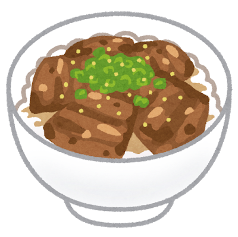
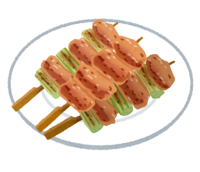
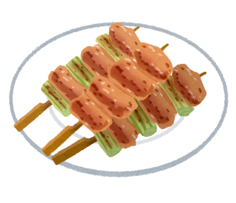
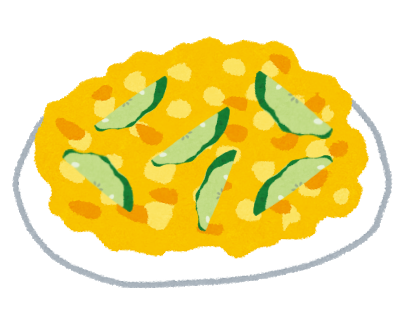
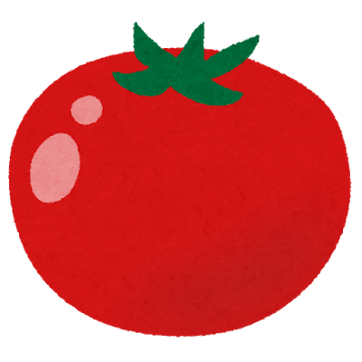

食材で選ぶ
-
 牛丼
牛丼
材料
牛肉 薄切り、玉ねぎ
鎌田のだし醤油1、しょうゆ・酒・砂糖3、みりん2、だし、生姜パウダー作り方
・玉ねぎを薄く切る。つなよしパパはシャキ玉が大嫌いなので、念のためにチン。
・深めのフライパンに、十分具材が浸るくらいの水と、調味料を全部入れて、沸いたら 玉ねぎを入れる。
玉ねぎを入れる。
・しばらくしたら牛肉を入れて、15分。
・味を見て、よければ火を止めて 完成。しょうゆ味が足りなかったら生しょうゆで調整。
完成。しょうゆ味が足りなかったら生しょうゆで調整。
-
ステーキ

材料
お肉：600円/100g程度の牛モモ、岩塩、ブラックペッパー、酒
ソース：玉ねぎ、しょうゆ・酒3、みりん1、
鶏ガラスープの素、塩、砂糖、酢、バター
油：サラダ油作り方
・お肉をフォークでまんべんなく刺したあと、ふちに1.5cm間隔の切れ目を入れて、両面に塩こしょう。少しおく。
・フライパンにサラダ油をほんの少しひいて火をつけ熱くなったら、お肉を入れる。
必要ならキッチンペーパーで表面を軽く拭き取ってから。
・まもなく側面まで焼けてきたら、ひっくり返す。
料理酒を一周かけて、勢いがおさまった後火を少し弱めたら蓋をする。
・料理酒がなくなってきたら、火を強くして全部飛ばして、火を止める。
油を切れる状態でしばらく休ませる。
・洗うか別のフライパンにすりおろした玉ねぎとソースの材料を全部入れて、弱火で煮詰める。お酢は最後。
・お皿にお肉を出して、半分にはソースをかけて、半分は岩塩をかけて、完成。 -
豚丼
材料
豚肉：薄切り、塩こしょう
タレ：しょうゆ3、酒2、みりん・砂糖1
玉ねぎ
トッピング：キャベツ、マヨネーズ、万能ねぎ
油：サラダ油作り方
・キャベツを千切りにしておく。
・玉ねぎを好きなように切ったら、つなよしパパはシャキ玉が大嫌いなので、念のためにチン。
お肉も細く切って塩こしょう。
・油を少しだけ引いたフライパンに火をつけて熱くなったらお肉を焼く。
・お肉が焼けたら一旦取り出して、残った油で玉ねぎを炒める。
・玉ねぎを炒め終わったら、お肉を戻して、タレの調味料を全部入れて、弱火で煮詰める。
・お肉にタレが絡まったら、火を止める。
・キャベツをしいたご飯の上にのせて、マヨネーズと万能ねぎをかけて、完成。 -
 焼き鳥
焼き鳥材料
お肉：鶏胸肉、塩こしょう、酒
味付け：岩塩、ケイジャンスパイス、ハーブソルト、梅、チーズなど
油：サラダ油
竹串作り方
・お肉を串に刺しやすいように切って、塩こしょう、酒。串に刺す。好きな味付けをする。
・余分な水分を拭き取ったら、少しだけ油を入れたフライパンに火をつけて熱くなったら串を並べる。
・側面が焼けてきたら、ひっくり返して火を弱め蓋をして焼く。
・両面火が通ったら、火を止めてお皿に盛り付けて、完成。梅やチーズはここでのせる。 -
 味玉
味玉
材料
卵
漬けダレ：しょうゆとみりん 1:1、砂糖・だし・だし醤油 少し作り方
・半熟ゆで卵を作る。
・レンジOKのタッパーやチャック付き袋に漬けダレの材料を全部入れて、軽くチンして冷ます。
・表面の水をしっかり拭き取って、卵をタレにつける。
・一晩つけて、完成。 -
 ナスの素揚げ
ナスの素揚げ材料
ナス、万能ねぎ
タレ：しょうゆとお酢 1:1、だし
油：サラダ油作り方
・ナスを食べる大きさに切る。表面には細かく切れ目を入れる。
・フライパンに油を多めに入れて、火をつける。
・熱くなったら、ハネに気をつけてナスを素揚げする。
・お皿にタレを作り、ナスが上がったらそのままタレに入れる。万能ねぎをかけて、完成。 -
ナスの味噌炒め
材料
ナス、万能ねぎ
調味料：つけてみそかけてみそ、しょうゆ、みりん、豆板醤
塩、鶏ガラスープの素、砂糖
油：サラダ油
作り方
・ナスを食べる大きさに切る。
・フライパンに火をつけて油を入れる。
熱くなったら、ナスを入れて、鶏ガラスープの素をかけて炒める。
・みそをメインに、素早く好きな分量で調味料を入れて炒める。
・味を見て、よければ火を止めて万能ねぎをかけて、完成。
-
キュウリと卵の炒め
材料
キュウリ
卵、塩、酒
調味料：塩、味の素、鶏がらスープの素、ホタテだし
油：サラダ油作り方
・キュウリを斜め薄切りの半分に切る。
・卵をボウルに溶いて、塩、味の素で味付け。ふんわりさせるために卵液が緩くならない程度に酒を少し入れる。
・熱くしたフライパンに油を多めに入れて、煙が出る手前で卵液を全部入れて、ふんわり炒める。
詳しくはニラ玉参照。
・卵ができたら一旦お皿に取り出して、今度はキュウリを炒める。火が通ったら、卵を戻して調味料で素早く味付け。
・軽く炒めたら、火を止めて完成。
-
トマトと卵の炒め

材料
トマト
卵、塩、酒
調味料：塩、味の素、鶏がらスープの素、ホタテだし
油：サラダ油作り方
・トマトをくし切りに近い乱切りにする。
・卵をボウルに溶いて、塩、味の素で味付け。ふんわりさせるために卵液が緩くならない程度に酒を少し入れる。
・熱くしたフライパンに油を多めに入れて、煙が出る手前で卵液を全部入れて、ふんわり炒める。
詳しくはニラ玉参照。
・卵ができたら一旦お皿に取り出して、今度はトマトを軽くつぶしながら炒める。
火が通ったら、卵を戻して調味料で素早く味付け。
・軽く炒めたら、火を止めて完成。